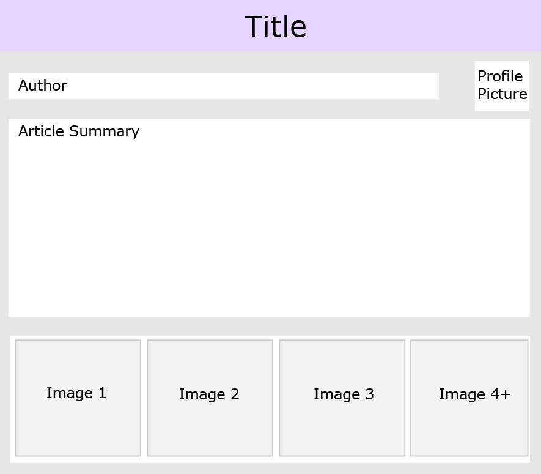
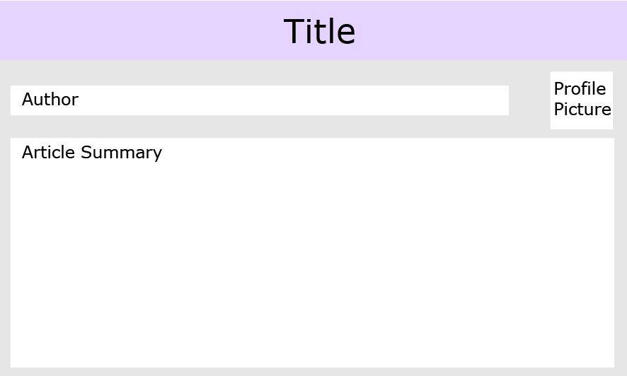

Assignment Part 2 - Style Guide
I. Branding
II. Colors
III. Typography
Main Headings, Sans Serif 40px, H1
This heading will be used for identifying individual segments such as FAQ, contact us, activities and services etc. Each page on the website will have a main heading identifying the page. These headings will be used for an aged care placement service company. Sans Serif was chosen as research identified that it was the clearest to read amoung older people. Since this website is for older clientelle, this font was deemed appropriate. HyperLink.
Sub Headings, Sans Serif 30px, H2
The sub headings will be used for identifying individual segments of a page like clauses for legal services, individual activities and services etc. Each page on the website will have multiple sub headings for each part. Additional headings were not needed for the design we had planned. HyperLink.
• Example bulletpoints. Used for clauses etc.
• Company logo (Southern Aged Care Placement Service) will use calligraphic421 font.
• Tabs, components, forms and menus use sans serif font.
• This style guide is heavily based on the Cody House Style guide.
VI. Forms
VII. Map
VIII. Header
IX. Blog Components
- 
- 